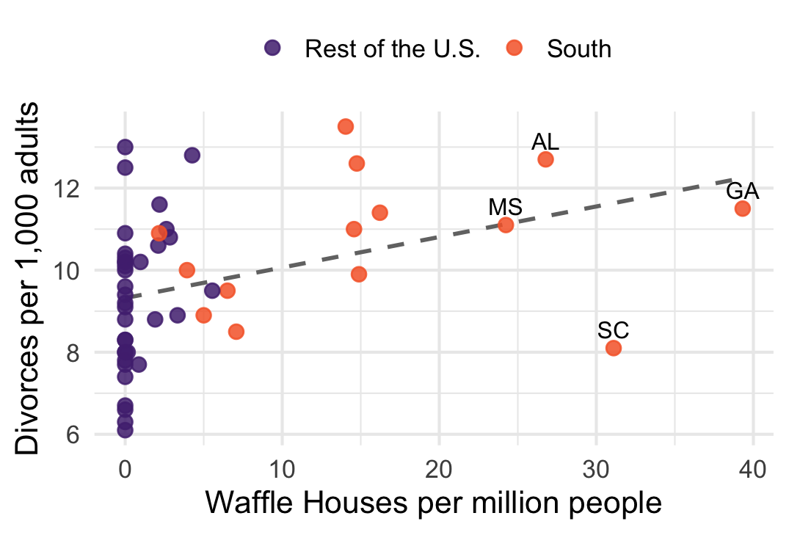
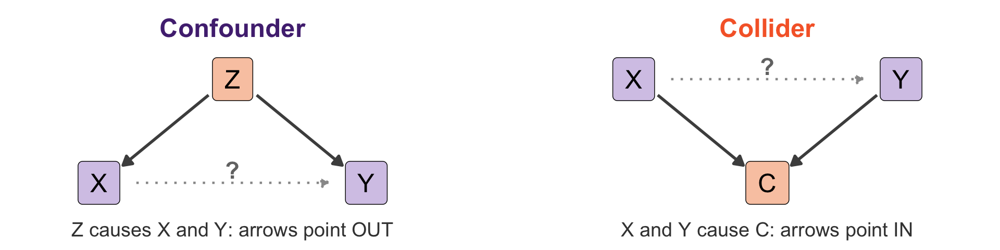
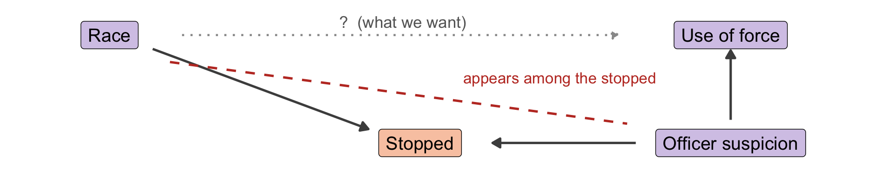

Post-midterm review


States with more Waffle Houses have more divorce: \(r =\) 0.37
Waffle House is a Southern chain. Being in the South and Waffle House density correlate at 0.76, and Southern states divorce more (10.7 vs. 9.3 per 1,000)
Control for age at time of first marriage and the relationship goes away.
Data: McElreath, Statistical Rethinking, ch. 5. 50 states, 2009 divorce rates.

For each, name the third variable and say whether you should condition on it.
1. Using newspaper reports, a researcher finds that small protests turn violent more often than large ones. Newspapers cover a protest if it is large or if it is violent.
Collider: coverage. Size and violence both cause it. A dataset built from news reports keeps only covered protests, so a small protest had to be violent to get in.
2. A columnist notes that countries with more McDonald’s restaurants per person go to war less often.
Confounder: economic development. It produces both the restaurants and peace. Compare countries at similar levels of development.
3. Congresswomen secure about 9% more federal spending for their districts than congressmen (Anzia & Berry 2011, AJPS). Thus, women are better at gaining funds for their districts than men (?)
Collider: winning office. If women face higher barriers to winning, only the most skilled women win, so gender and skill are linked among winners. That is selection, not an effect of being a woman.